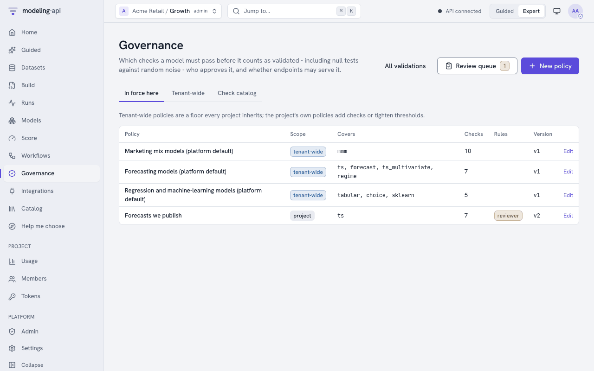
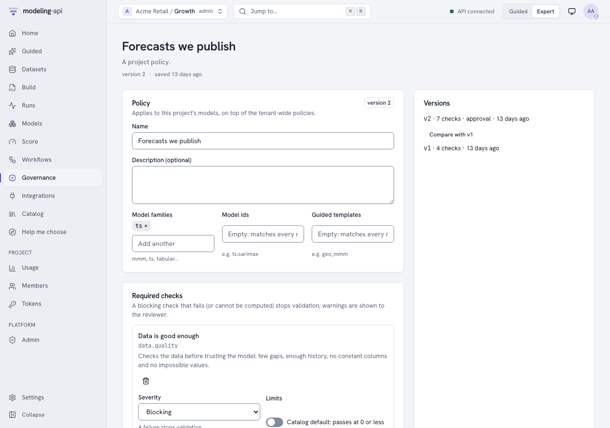
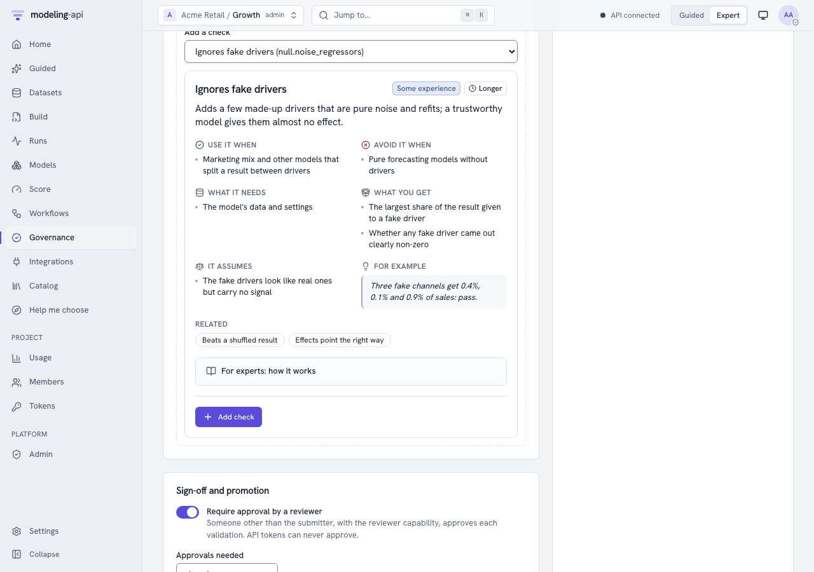
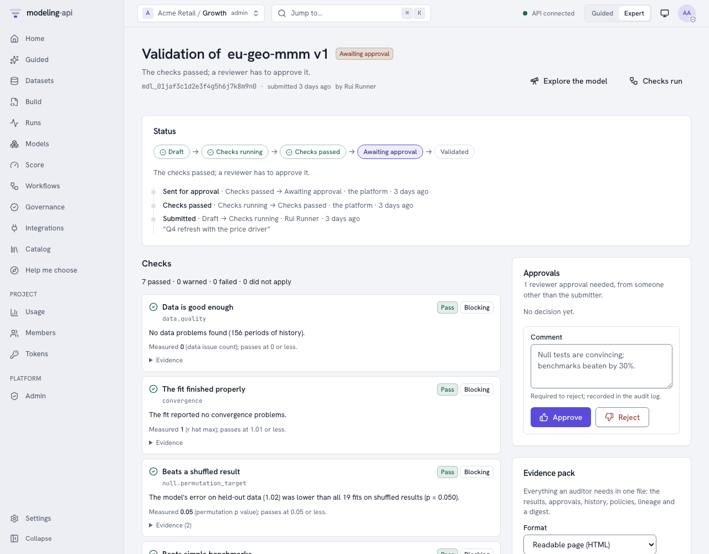
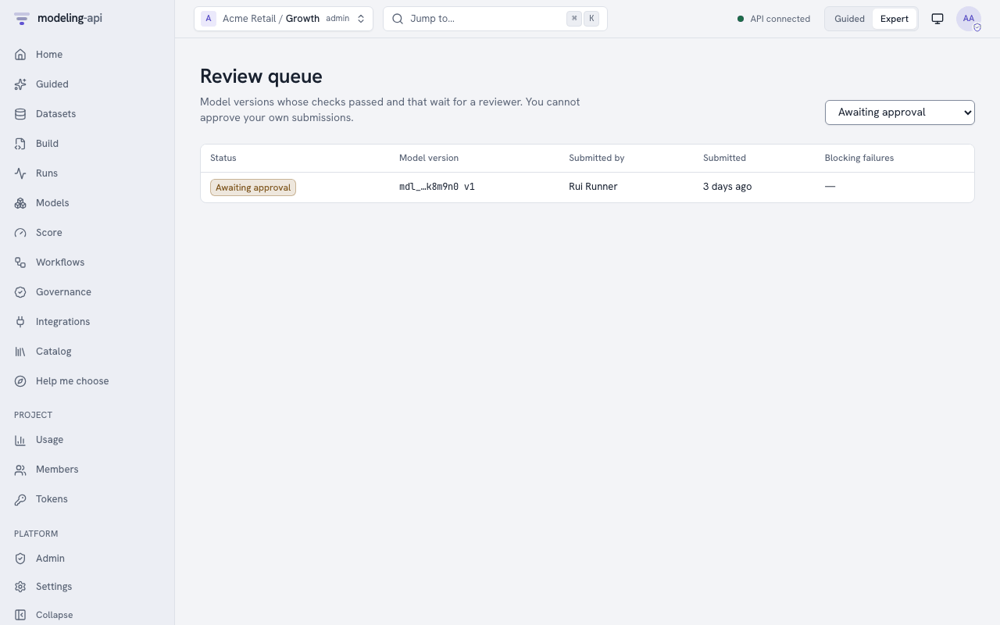

Validate models with governance policies v0.5¶
If a model gives information for decisions, it must show that it learned something real. This guide shows how to do these tasks:
- Tell which checks a model must pass (a policy).
- Run the checks on a model version (a validation).
- Get a second person to approve the version.
- Export the evidence pack for an auditor.
- Make endpoints refuse models that are not validated.
Governance gives the concepts and the full state machine. The HTTP API reference gives all the operations.
You can also do all these tasks in the web app. See In the web app.
Can you trust this model? tells why the null tests are important, in plain
words and in statistics. In Python, use api.governance and api.validations
(client guide). In a terminal, use mapi governance,
mapi validate model, mapi validations and mapi approve
(CLI guide):
mapi governance checks # what a policy can require
mapi governance checks --about null.permutation_target --expert
mapi governance policies ls # in force here: tenant-wide first
mapi governance policies create forecast-policy.yaml
mapi validate model model://growth/wf-weekly-readiness-fit@v1 # runs the checks, waits
mapi validations ls --queue # reviewers: what waits for a decision
mapi approve "$VALIDATION" --comment "Null tests convincing; beats naive by 25%"
mapi validations pack "$VALIDATION" --out evidence.html # for the auditor
The examples below use curl with an API token. For the api helper, see
Endpoints and webhooks:
api() { curl -sS -H "Authorization: Bearer $MAPI_TOKEN" -H "X-Mapi-Project: $MAPI_PROJECT" \
-H 'Content-Type: application/json' "$@"; }
What the checks mean, in plain words¶
Each check has an About card (GET /v1/catalog/governance-checks). The
governance checks reference lists each check
with its card, metric, default limits, necessary conditions and parameters. In summary:
| Check | It asks | How the platform measures it |
|---|---|---|
null.permutation_target |
Is the model better than versions of itself that were fitted on shuffled data? | A model with drivers keeps its result. The platform shuffles its drivers together in blocks of time. Thus trend, season and controls cannot pass alone. For a model without drivers (or a model that ignores them), the platform shuffles the changes from period to period of its result. Then it adds them up again from the same start. For a series that does not wander, it shuffles the plain values. This keeps the quantity of wander, but removes all that is predictable. The platform fits the model again n_permutations times. It scores each fit on its held-out skill against the null forecast (the last value, or the mean). This skill does not change with the level where a shuffle lands. The p-value is the fraction of shuffled fits that did as well as the real fit, (1 + #as good) / (n + 1). With 20 shuffles, the smallest possible p is 0.048. Thus, for a 5% test, use a minimum of 19. |
null.noise_regressors |
Does the model give fake drivers made of pure noise almost no credit? | The platform adds n_noise placebo drivers. Each placebo is a real driver shuffled in time, or Gaussian noise with the mean and spread of a real driver. The placebos are new channels of a marketing-mix model, or new variables of other models. Then the platform fits the model again. Placebos get the default prior of the model. The platform does not copy the priors and calibration of the real channels (business priors, lift tests). The platform switches each placebo off and scores again. Thus it measures the share of each placebo in the total effect of the real drivers. If it cannot measure the effect of the drivers, it uses the share of the result. The check flags a Bayesian model when a placebo share is above the warn limit with a minimum of 90% posterior probability. It does not flag it when the interval does not include zero, because the positive-only effects of a marketing mix model always do this. For frequentist models, the check uses Holm's correction for the number of placebos on the placebo p-values. |
null.placebo_time_shift |
Do the effects go away when the drivers move months away? | The platform shifts the drivers (shifts, default ±26 periods, wrapped around) and fits the model again. The check gives the placebo effect as a share of the real effect. If a model still finds most of the effect, it finds trend or season, not the drivers. |
baseline.beats_naive |
Is the model better than simple benchmarks on held-out periods? | The platform scores the train-only model on the held-out periods. It compares the model with "same as last period", "same as last season", the mean and the drift line. It forecasts these benchmarks from the training history. Skill is 1 - error(model) / error(best benchmark). The check also gives MASE. |
residuals.whiteness |
Is there no pattern left in the errors? | Ljung-Box on the in-sample residuals of each series. The smallest p-value counts. ARMA orders decrease the degrees of freedom. |
stability.rolling_params |
Are the key estimates stable over time? | The platform fits the model again on rolling windows of history. The check gives the largest coefficient of variation of the key estimates across the windows. |
plausibility.signs |
Do effects go in the expected direction? | By default, media and spend must increase the result. If you switch a channel off, the prediction must decrease. For Bayesian models, this applies to each posterior draw. List other expectations in expected, for example {"price": "negative"}. |
sensitivity.prior |
For Bayesian models: do the data control the answers, and not the assumptions? | The platform multiplies each prior width of the model by each value of scales. This includes the default values of the plugin that the settings do not give. For mmm.bayesian, these are the default ROI prior LogNormal(0, 1), seasonality.prior_sigma, trend.growth_prior_sigma and hierarchy.media_geo_sigma. It also includes business priors that the platform translates at fit time. Widths are sigma, scale, sd and tau under a prior… key, and keys named …prior_sigma or …_sigma. Beta/Gamma beta or b parameters are not widths, and the platform never changes them. The check gives the largest relative change of a key posterior mean. |
recovery.simulated |
Does the model find known answers? | The platform simulates data from the fit. A Bayesian model gives the data from its posterior predictive draws (one posterior draw and the noise of the model). Other models give the expected values plus block-bootstrapped residuals. The platform fits the model again n_sims times. The check counts how frequently the 90% intervals contain the known values: the values of the posterior draw, or the fitted values. The target is 90%. If the model has no predictive draws and the target holds whole numbers (counts), the check is skipped. The evidence counts the simulated datasets that the model cannot fit (failed_simulations). This is a parametric-bootstrap version of simulation-based calibration. |
convergence |
Did the fit finish correctly? | Bayesian: the largest split R-hat. Divergences and the effective sample size are evidence. One divergence changes a pass to a warning. Other models: the converged flag of the optimiser. |
holdout.accuracy |
Is the error on unseen data below your limit? | The holdout metric of the fit (mape by default, as a fraction). For rmse or mae, set thresholds in the units of the KPI. |
data.quality |
Is the data sufficiently good? | The quality warnings of the Data Explorer that are more than information: missing shares above max_missing, fewer than min_history_periods, constant drivers, negative spend, values outside declared bounds, duplicated periods, long gaps and collinear drivers. |
Each result has these items:
- The measured value.
- The threshold.
- A plain-language
message_plain. - A
suggested_action, if the check did not pass. - Evidence (tables, numbers) for the auditor.
Model families¶
The checks change for the method that estimates the model (mapi_spec.governance.model_kind):
- Bayesian (MCMC, VI, SMC): A new fit uses a budget of a maximum of 200 draws and 200
tuning steps on 2 chains (
RefitBudget). Intervals are highest-density intervals.sensitivity.priorapplies. - Frequentist (statsmodels, MAP, Kalman, ridge): A new fit runs as configured. Intervals
are confidence intervals from standard errors.
convergencereads the optimiser flag. - Machine learning (scikit-learn, xgboost, quantile and conformal models): There are no
parameter intervals. If the model has no coefficients, the platform skips
recovery.simulatedandstability.rolling_params. The null tests and the benchmarks apply with no change.
If a check does not apply, the result is skipped with the reason. For example: "the model
has no test period (add a data split and refit)". If the platform cannot calculate a check, the
result is error. If the check is blocking, error blocks the validation. A governance run
fits the model again a maximum of max_refits times (120 by default).
The default policies¶
When a project uses governance for the first time, the platform makes three tenant-wide policies. They decide what a validation checks. But they do not gate promotion and do not need approval. An admin can switch on these functions.
| Policy | Families | Blocking | Warning | Information |
|---|---|---|---|---|
| Marketing mix models | mmm |
data quality, convergence, holdout accuracy (MAPE ≤ 15% warn / 30% fail), shuffled results (20), fake drivers (3), effect signs | beats benchmarks, time-shift placebo, prior sensitivity | residual whiteness |
| Forecasting models | ts, forecast, ts_multivariate, regime |
data quality, convergence, beats benchmarks, holdout accuracy | residual whiteness, shuffled results | parameter stability |
| Regression and machine learning | tabular, choice, sklearn |
data quality, holdout accuracy, shuffled results | fake drivers | convergence |
The thresholds are the catalog defaults:
| Measure | Passes | Warns |
|---|---|---|
| Shuffled-result p-value | ≤ 0.05 | ≤ 0.10 |
| Fake-driver share | ≤ 2% | ≤ 5% |
| Placebo effect | ≤ 25% | ≤ 50% |
| Benchmark skill | ≥ 0.05 | ≥ 0 |
| Ljung-Box p | ≥ 0.05 | ≥ 0.01 |
| Rolling variation | ≤ 25% | ≤ 50% |
| Wrong-sign share | ≤ 10% | ≤ 25% |
| Prior sensitivity | ≤ 20% | ≤ 50% |
| Interval coverage | within 10 points of 90% | within 25 points |
| R-hat | ≤ 1.01 | ≤ 1.05 |
| Holdout MAPE | ≤ 15% | ≤ 30% |
| Data problems | none | a maximum of 2 |
Write a policy¶
Project admins add policies to a project. Tenant admins add tenant-wide policies. Each project gets the tenant-wide policies as a minimum. A project can make a threshold stricter, but it can never make it less strict:
api -X POST "$API/v1/governance/policies" -d '{
"name": "Forecasts we publish",
"applies_to": {"families": ["ts"]},
"checks": [
{"check": "baseline.beats_naive"},
{"check": "null.permutation_target", "params": {"n_permutations": 20}},
{"check": "residuals.whiteness", "severity": "warning"},
{"check": "holdout.accuracy", "thresholds": {"warn": 0.10, "fail": 0.20}}
],
"require_approval": true,
"approvals_required": 1,
"require_validated_for_promotion": true
}'
PUT …/policies/{policy_id}saves the next version. To refuse an edit that occurs at the same time with409, sendexpected_version.GET …/versionslists all the versions.DELETEretires the policy, but keeps its versions for audit.GET /v1/governance/policieslists the policies in force in the project. The tenant-wide policies are first.
Validate a model version¶
The answer (202) is a validation in checks_running. It has the checks that apply to it. It
also has the governance run (workflow_run_id) that measures the checks in the sandbox.
All the policies in force for the model always apply to a validation. These are the
tenant-wide minimum and the policies of the project. policy_ids can only add more active
policies. It can never remove a policy. The platform locks the version while it checks a
request. Thus two requests at the same time make one validation. A request and the submission
of a workflow also make one validation. The other request gets 409
VALIDATION_TRANSITION_INVALID.
Monitor the run as you monitor other runs (GET /v1/runs/{run_id}, or its event stream). When
the run finishes, the validation moves to the next status automatically:
checks_running -> checks_passed -> validated (no approval required)
checks_running -> checks_passed -> awaiting_approval (approval required)
checks_running -> checks_failed (a blocking check failed or errored)
GET /v1/validations/{validation_id} shows the status, all the results and the history.
GET …/evidence gives the results with their evidence, one page at a time.
If the validation fails, or a reviewer rejects it, do these steps:
- Repair the model or the data.
- Send
POST /v1/validations/{id}:resubmit. A new round starts under the policies that are in force now.
:cancel stops the checks that run. The validation goes back to draft.
Approve as a second person¶
When a policy needs approval, a different person from the submitter decides. This person must have the reviewer capability, or be a project admin. Give the capability on the membership:
api -X PATCH "$API/v1/tenants/acme/projects/growth/members/$USER_ID" \
-d '{"capabilities": ["reviewer"]}'
Reviewers find their queue at GET /v1/validations?status=awaiting_approval. They decide in a
signed-in session. API tokens can never approve:
curl -X POST "$API/v1/validations/$VALIDATION_ID/approvals" -d '{"decision": "approve",
"comment": "Null tests are convincing; benchmarks beaten by 30%."}'
- The platform refuses the submitter (
403 SELF_APPROVAL_FORBIDDEN). - Each reviewer decides one time in each round.
approvals_requiredapprovals validate the version.- One rejection rejects the version. A rejection needs a comment.
If a validated version must not be used again, retire it with :deprecate and a reason.
Promotion requires validation¶
A policy in force can say require_validated_for_promotion. If it does, you can promote a
model version to an endpoint only when these conditions are true:
- The latest validation of the version is
validated. - The latest validation covered each such policy as it is now.
A validation covers a policy in one of two ways:
- It gives the policy at its current version.
- It applied each check of the policy at the same strictness or stricter (severity, limits and settings). It also had the reviewers that the policy asks for.
If a version was validated before a gating policy was added or made stricter, the platform
shows it as validated under other or older policies. In this case, request a new validation.
The platform refuses all other promotions with 409 NOT_VALIDATED. No administrator override
changes this. The audit log records the refusal as endpoint.promote_not_validated.
Export the evidence pack¶
The answer is the pack as JSON (format: mapi.evidence-pack/v1). The pack has these items:
- The validation with all the results, their evidence, the approvals and the history.
- The policies at the versions that applied to the validation.
- The lineage and the sanity scorecard of the model.
- A
digest(sha256 of the canonical content).
With format: html, the answer also has download. This is a signed link to a static HTML
page that contains all its content. The page has only inline styles. It has no scripts and no
external assets, because a Content-Security-Policy prevents them. The page escapes all values.
The audit log records exports (model.evidence_export).
In the web app¶
Governance in the sidebar (G then V) has three tabs:
- In force here: The tenant-wide policies first, then the policies of the project. For each policy, the tab shows what it covers and its number of checks. It also shows if the policy needs a reviewer and if it gates promotion.
- Tenant-wide.
- Check catalog: Each check has its About card, what it measures and its default limits.

Editing a policy¶
Project admins edit project policies. Tenant admins edit tenant-wide policies. Other users can only read the policies.
- Open a policy, or click New policy.
- In Covers, set the model families, the model ids and the Guided templates. Empty lists match all models.
- In Required checks, add a check from the catalog. Its About card shows before you add it.
- Set the severity of the check: Blocking, Warning or Information.
- To set the warn and fail values of the check, switch on Custom limits.
- Adjust the settings of the check. The form for the settings comes from the parameters of the check, for example the number of shuffles.
- In Sign-off and promotion, set Require approval by a reviewer and the number of reviewers.
- Set Only validated models can be promoted to an endpoint and Active.
- Click Save version N. The app saves the next version.
The page refuses a fail limit that is less strict than the warn limit, as the server does.


If a different person edits the policy at the same time, the app refuses your save. Your edit stays on the screen. Versions lists all the versions and compares two versions side by side. Retire policy keeps the versions of the policy for audit.
Validating a model version¶
The page of a model version has a Validation button. The button lists the validations of the version and requests a new validation. A new request has these items:
- The policies that apply. All the policies in force always apply. If you tick other policies, they also apply.
- The data to check against (optional).
- A note.
The validation page then shows these items:
- Status: The position of the validation on its path. The path is draft → checks running → checks passed → awaiting approval → validated. Other statuses are checks failed, rejected and deprecated. The status also shows the history of each transition, with the person who made it and their note.
- Checks: Failures first. Each check has its plain-language message and What to do if it did not pass. It also has the measured value against its limit, and its evidence. The evidence is small tables and numbers. For the shuffled-result test, it is also a plot. The plot shows the distribution of the errors of the shuffled fits, with a mark at the error of the real model. The plot sandbox draws the plot.
- Approvals, Evidence pack and Held to (the policy versions).


The page shows these buttons for the applicable states:
- Cancel checks.
- Resubmit, after failed checks or a rejection.
- Deprecate, with a reason, for a validated version. Only project admins can deprecate.
Export evidence pack saves the HTML page or the JSON as a file. The app never opens the HTML.
Reviewing¶
Reviewers find Review queue on the Governance page, with the number of validations that wait. They can also use Validations with the filter Awaiting approval. The approval form shows only to members who can approve. These are project admins, and editors or runners who have the reviewer capability. A rejection needs a comment.
On your own submission, the form tells you that a second person must review it. Its buttons
are disabled. The server also refuses your decision (SELF_APPROVAL_FORBIDDEN).
Project admins give and remove the capability in the Reviewer column of Members. Admins have the capability automatically. Viewers cannot have it.

Promotion in the app¶
A policy can gate promotion. In this case, if you promote a version that is not validated from Integrations, the app refuses. It shows A governance policy requires a validated model and the current validation status of the version. It also shows links to the validation, or to request a validation. The app gives no override, because no override passes this rule.
Audit and webhooks¶
The audit log records these events:
- Each policy change (
policy.create,policy.update,policy.delete). - Each request (
model.validation_request). - Each transition (
model.validation_transition, with from, to and the actor). - Each decision (
model.approve,model.reject). - Each deprecation.
To start review queues and release pipelines, subscribe webhooks to these events:
model.validation.checks_passedmodel.validation.checks_failedmodel.validation.awaiting_approvalmodel.validatedmodel.rejectedmodel.deprecated.